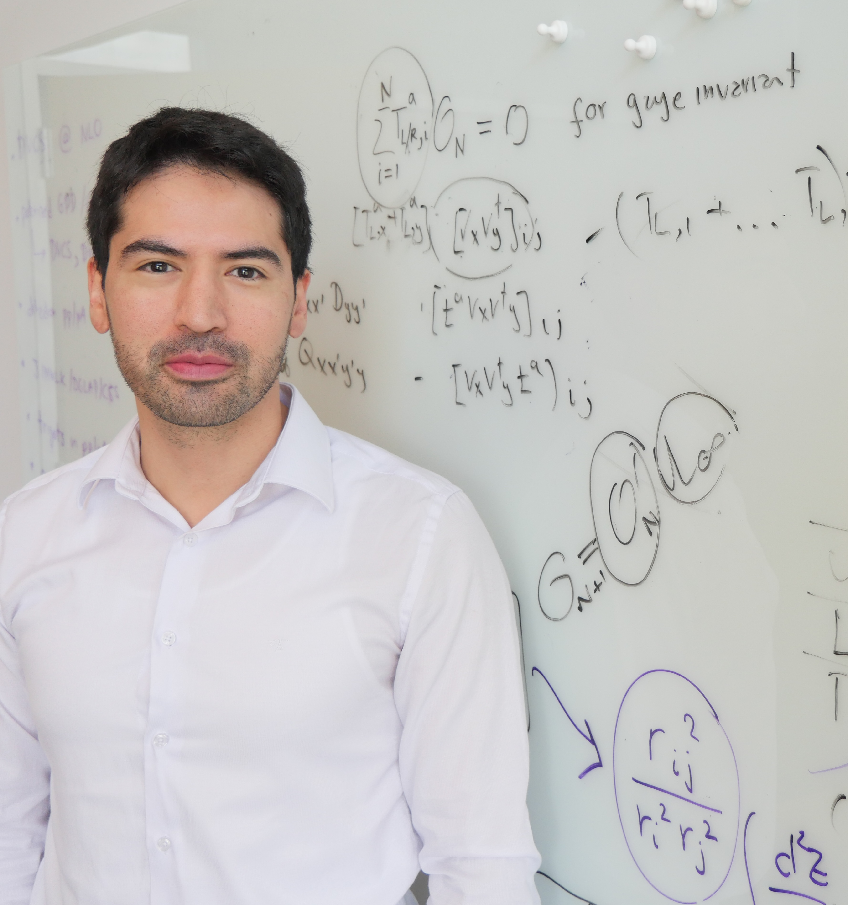

Farid Salazar
Assistant Professor of Physics, Temple University
Fellow, RIKEN Brookhaven Research Center
Theoretical High-Energy QCD • Gluon Saturation • Electron-Ion Collider

About
I am a theoretical physicist working on high-energy Quantum Chromodynamics (QCD), with a focus on gluon saturation and collider phenomenology. My research connects precision theory with observables relevant for present and future experiments, including the Electron-Ion Collider, to better understand the emergent structure of hadrons and nuclei.
Join the Research Group
I welcome inquiries from motivated PhD students, undergraduate researchers, and postdocs. If you are interested in QCD, collider physics, effective field theory, or computational approaches to strong-interaction physics, please get in touch. Students from diverse backgrounds are encouraged to reach out.
Research Areas
- Quantum Chromodynamics at high energies
- Gluon saturation and small-x physics
- Multi-parton correlations and jet observables
- Hadron and nuclear tomography
- Effective field theory methods
Publications
Selected recent work is listed below. For a complete publication list, see Google Scholar and INSPIRE-HEP.
-
Probing gluon saturation with forward di-hadron correlations in proton-nucleus collisions
with P. Caucal, Z.-B. Kang, P. Korcyl, B. Schenke, T. Stebel, R. Venugopalan, W. Zhao (2025)
arXiv:2512.21466 -
Gluon splitting at small x: a unified derivation for the JIMWLK, DGLAP and CSS equations
with P. Caucal, E. Iancu, F. Yuan (2025, accepted in JHEP)
arXiv:2510.08454 -
Transverse momentum dependent factorisation in the target fragmentation region at small x
with P. Caucal (2025, accepted in PRL)
arXiv:2502.02634 -
Unveiling the sea: universality of the transverse momentum dependent quark distributions at small x
with P. Caucal, M. Guerrero Morales, E. Iancu, F. Yuan, Phys. Lett. B 874 (2026) 140271
arXiv:2503.16162 -
Global Bayesian Analysis of J/psi Photoproduction on Proton and Lead Targets
with H. Mantysaari, H. Roch, B. Schenke, C. Shen, W. Zhao, Phys. Rev. D 113 (2026) 014038
arXiv:2507.14087 -
Correspondence between Color Glass Condensate and High-Twist Formalism
with Y. Fu, Z.-B. Kang, X.-N. Wang, H. Xing, Phys. Rev. Lett. 135 (2025) 032301
arXiv:2310.12847
Talks
Upcoming and selected invited talks. A full list is available in my CV.
Upcoming (2026)
-
Precision QCD computation in the small x regime
Invited talk, APS Global Physics Summit 2026, Colorado, USA (March 19, 2026) -
Initial particle production in heavy ion collisions
Invited talk, Kavli Institute for Theoretical Physics (KITP), UCSB, California, USA (March 30, 2026) -
Transverse momentum distributions at small x
Colloquium, Triangle Nuclear Theory Series, Duke University, North Carolina, USA (May 26, 2026)
Selected Recent Talks (2025)
-
Latest developments in high-energy QCD to understand the initial state in heavy-ion collisions
Plenary talk, Quark Matter 2025, Goethe University Frankfurt, Germany (April 11, 2025) -
Mining for gluon saturation at the Electron-Ion Collider
Invited talk, ePIC/EIC Early Science Workshop, Stony Brook University, New York, USA (April 24, 2025) -
Gluon saturation physics
Invited talk, Joint EIC Latin America-RADPyC Workshop, Pachuca, Mexico (May 21, 2025) -
TMD factorization at small-x: theory and phenomenology
Contributed talk, International Workshop on Ultra Peripheral Collisions, Saariselka, Finland (June 10, 2025) -
Diffraction at the EIC
Contributed talk, Aspen Center for Physics Workshop, Colorado, USA (September 3, 2025) -
Mining gluon saturation at colliders
Nuclear Theory Seminar, Rice University, Texas, USA (November 7, 2025)
Teaching & Mentoring
I supervise students at all levels, from early undergraduate projects to doctoral research. My mentoring emphasizes strong foundations, independent thinking, and clear scientific communication.
CV
Download CV: Farid_Salazar_CV.pdf
Contact
Email: farid.salazar@temple.edu
Department of Physics
Temple University
1925 N 12th Street
Philadelphia, PA 19122, USA